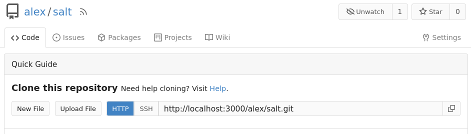
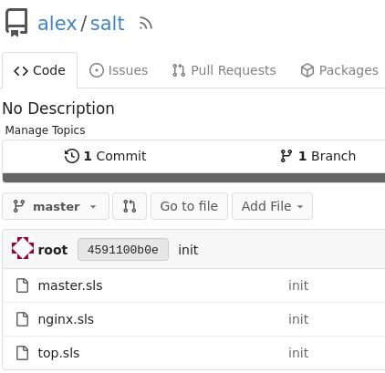

Salt Beacons/Reactors and IaC
В данном практическом занятии опробуем механизмы обратной связи в saltstack такие как beacons и reactors. А также попробуем реализовать подход IaC(Infrastructure as Code), развернув собственный git репозиторий и настроив salt на автоматическое применение конфигурации из него.
Vagrant
Для работы с salt будем использовать следующий Vagrantfile:
Vagrant.configure("2") do |config|
config.vm.define "master" do |c|
c.vm.box = "ubuntu/lunar64"
c.vm.hostname = "master"
c.vm.network "private_network", type: "dhcp"
c.vm.network "forwarded_port", guest: 3000, host: 3000
c.vm.provision "shell", inline: <<-SHELL
curl -fsSL -o /etc/apt/keyrings/salt-archive-keyring-2023.gpg \
https://repo.saltproject.io/salt/py3/ubuntu/22.04/amd64/SALT-PROJECT-GPG-PUBKEY-2023.gpg
echo "deb [signed-by=/etc/apt/keyrings/salt-archive-keyring-2023.gpg arch=amd64] https://repo.saltproject.io/salt/py3/ubuntu/22.04/amd64/latest jammy main" \
| tee /etc/apt/sources.list.d/salt.list
apt-get update -q
apt-get install -yq libnss-mdns salt-master salt-minion
echo 'master: master.local' > /etc/salt/minion.d/master.conf
systemctl enable --now salt-master.service
systemctl restart salt-minion.service
systemctl enable salt-minion.service
SHELL
end
config.vm.define "minion1" do |c|
c.vm.box = "ubuntu/lunar64"
c.vm.hostname = "minion1"
c.vm.network "private_network", type: "dhcp"
c.vm.provision "shell", inline: <<-SHELL
curl -fsSL -o /etc/apt/keyrings/salt-archive-keyring-2023.gpg \
https://repo.saltproject.io/salt/py3/ubuntu/22.04/amd64/SALT-PROJECT-GPG-PUBKEY-2023.gpg
echo "deb [signed-by=/etc/apt/keyrings/salt-archive-keyring-2023.gpg arch=amd64] https://repo.saltproject.io/salt/py3/ubuntu/22.04/amd64/latest jammy main" \
| tee /etc/apt/sources.list.d/salt.list
apt-get update -q
apt-get install -yq libnss-mdns salt-minion
echo 'master: master.local' > /etc/salt/minion.d/master.conf
systemctl restart salt-minion.service
systemctl enable salt-minion.service
SHELL
end
config.vm.define "minion2" do |c|
c.vm.box = "ubuntu/lunar64"
c.vm.hostname = "minion2"
c.vm.network "private_network", type: "dhcp"
c.vm.provision "shell", inline: <<-SHELL
curl -fsSL -o /etc/apt/keyrings/salt-archive-keyring-2023.gpg \
https://repo.saltproject.io/salt/py3/ubuntu/22.04/amd64/SALT-PROJECT-GPG-PUBKEY-2023.gpg
echo "deb [signed-by=/etc/apt/keyrings/salt-archive-keyring-2023.gpg arch=amd64] https://repo.saltproject.io/salt/py3/ubuntu/22.04/amd64/latest jammy main" \
| tee /etc/apt/sources.list.d/salt.list
apt-get update -q
apt-get install -yq libnss-mdns salt-minion
echo 'master: master.local' > /etc/salt/minion.d/master.conf
systemctl restart salt-minion.service
systemctl enable salt-minion.service
SHELL
end
end
Команды будут выполняться на машине master из под пользователя root.
Для этого после команды vagrant ssh можно выполнить команду sudo -i.
Accept Keys
После того как машины загрузятся необходимо принять ключи от миньонов:
# salt-key -A
The following keys are going to be accepted:
Unaccepted Keys:
master
minion1
minion2
Proceed? [n/Y]
Key for minion master accepted.
Key for minion minion1 accepted.
Key for minion minion2 accepted.
State
Опишем простое состояние с пакетом nginx и файлом index.html, для этого
создадим файл /srv/salt/top.sls:
base:
'minion*':
- nginx
А также сам файл /srv/salt/nginx.sls:
nginx:
pkg.installed: []
/var/www/html/index.html:
file.managed:
- contents: |
hello from {{ grains['id'] }}
После чего применим состояние:
# salt 'minion*' state.apply
minion1:
----------
...
------------
Succeeded: 2 (changed=2)
Failed: 0
------------
Total states run: 2
Total run time: 11.861 s
# curl minion1.local
hello from minion1
# curl minion2.local
hello from minion2
Beacon
Добавим на миньоны beacon, который будет отслеживать изменения
файла index.hml и отправлять информацию об этом на мастер. Для этого добавим
в файл состояния /srv/salt/nginx.sls описание beacon:
nginx:
pkg.installed: []
pyinotify:
pip.installed: []
/var/www/html/index.html:
file.managed:
- contents: |
hello from {{ grains['id'] }}
beacon_index:
beacon.present:
- save: True
- enable: True
- files:
/var/www/html/index.html:
mask:
- modify
- disable_during_state_run: True
- beacon_module: inotify
После чего применим состояние на миньонах:
# salt 'minion*' state.apply
minion1:
----------
...
Summary for minion1
------------
Succeeded: 4 (changed=1)
Failed: 0
------------
Total states run: 4
Total run time: 7.135 s
Для проверки работы beacon можно на мастере запустить команду
# salt-run state.event pretty=True
И в отдельном окне терминала зайти на миньон и изменить файл index.html:
# echo 123 > /var/www/html/index.html
После чего в терминале мастера в выводе команды salt-run state.event получим
событие:
# salt-run state.event pretty=True
salt/beacon/minion1/beacon_index//var/www/html/index.html {
"_stamp": "2023-11-05T12:51:23.283037",
"change": "IN_MODIFY",
"id": "minion1",
"path": "/var/www/html/index.html"
}
Таким образом мы убедились, что мастер получает требуемые нам события от миньонов.
Reactor
С помощью механизма reactors можно вызывать функции при получении событий.
Опишем реакцию на получения событий от миньонов таким образом, что при получении
события применялось текущее состояние, описанное в наших sls файлах. Для этого
дополним конфигурацию мастера параметром reactor, создав файл
/etc/salt/master.d/reactor.conf:
reactor:
- salt/beacon/*: # события
- /srv/reactor/apply.sls # reactor файл
Здесь мы описываем при каких события какой reactor файл sls будет вызван.
Создадим сам файл /srv/reactor/apply.sls:
apply:
local.state.apply: # функция, local - исполняется на мастере
- tgt: '{{ data['id'] }}' # на каких миньонах выполнять
В котором мы описываем функцию на исполнение, а также указываем на каких миньонах
как в команде salt. Здесь используется шаблон jinja2, который берет информацию
из полученного события в переменной data, где id будет имя миньона. Таким
образом при получении события по изменению файла index.html будет принудительно
применено состояние, которое нами было описано ранее.
Для применения новой конфигурации мастера необходимо перезапустить сервис:
# systemctl restart salt-master.service
Проверим, изменив файл index.html на миньоне и подождав некоторое время:
# echo 123 > /var/www/html/index.html
# curl minion1.local;sleep 5;curl minion1.local
123
hello from minion1
GitFS
Salt позволяет хранить состояния не только на локальной файловой
системе, он также поддерживает различные бекенды для хранения. Одним из бекендов
может выступать git репозиторий. Поднимем собственный git репозиторий на мастере,
для этого опишем состояние для него в файле /srv/salt/master.sls:
gitea:
pkg.installed:
- name: docker.io
pip.installed:
- pkgs:
- docker
- pygit2
docker_container.running:
- image: gitea/gitea
- port_bindings:
- 3000:3000
Данным состоянием мы описываем запуск контейнера с образом gitea. Добавим
это состояние на мастер в файле /srv/salt/top.sls:
base:
'minion*':
- nginx
'master':
- master
И применим его:
# salt master state.apply
master:
----------
...
Summary for master
------------
Succeeded: 3 (changed=3)
Failed: 0
------------
Total states run: 3
Total run time: 53.592 s
После чего откроем в браузере страницу
http://localhost:3000 с Initial Configuration,
на которой можно не меняя параметры нажать кнопку Install Gitea.
После этого можно создать себе аккаунт, а после и новый репозиторий в правом
верхнем углу. Создадим репозиторий с именем salt, после чего получим пустой
репозиторий: 
Добавим все наши файлы из /srv/salt в новый репозиторий, для этого зайдем
в эту директорию и инициализируем новый репозиторий, добавим все файлы и отправим
в наш новый репозиторий:
# cd /srv/salt/
# git init
Initialized empty Git repository in /srv/salt/.git/
# git add .
# git commit -m 'init'
3 files changed, 37 insertions(+)
create mode 100644 master.sls
create mode 100644 nginx.sls
create mode 100644 top.sls
# git remote add origin http://localhost:3000/alex/salt.git
# git push -u origin master
Username for 'http://localhost:3000': alex
Password for 'http://alex@localhost:3000':
Enumerating objects: 5, done.
Counting objects: 100% (5/5), done.
Delta compression using up to 2 threads
Compressing objects: 100% (5/5), done.
Writing objects: 100% (5/5), 609 bytes | 609.00 KiB/s, done.
Total 5 (delta 0), reused 0 (delta 0), pack-reused 0
remote: . Processing 1 references
remote: Processed 1 references in total
To http://localhost:3000/alex/salt.git
* [new branch] master -> master
branch 'master' set up to track 'origin/master'.

Теперь добавим конфигурацию для мастера, чтобы он брал состояния из нашего
репозитория, для этого добавим файл /etc/salt/master.d/git.conf:
fileserver_backend:
- gitfs
gitfs_remotes:
- http://localhost:3000/alex/salt.git
Для применения новой конфигурации мастера необходимо перезапустить сервис:
# systemctl restart salt-master.service
После чего более директория /srv/salt использоваться не будет, а состояние
будет тянуться из нашего репозитория. Отредактируем файл состояния nginx.sls
прямо через веб интерфейс http://localhost:3000,
изменив контент для index.html:
nginx:
pkg.installed: []
pyinotify:
pip.installed: []
/var/www/html/index.html:
file.managed:
- contents: |
hello from {{ grains['id'] }} with git
beacon_index:
beacon.present:
- save: True
- enable: True
- files:
/var/www/html/index.html:
mask:
- modify
- disable_during_state_run: True
- beacon_module: inotify
По-умолчанию мастер обновляет состояние из репозитория раз в минуту, так что подождав некоторое время можно применить состояние:
# salt 'minion*' state.apply
minion1:
----------
...
Summary for minion1
------------
Succeeded: 4 (changed=1)
Failed: 0
------------
Total states run: 4
Total run time: 1.316 s
# curl minion1.local
hello from minion1 with git
# curl minion2.local
hello from minion2 with git
Schedule
Чтобы не применять состояние вручную можно также добавить запуск по расписанию:
# salt 'minion*' schedule.add apply_job function='state.apply' seconds=30
minion1:
----------
changes:
----------
apply_job:
added
comment:
Added job: apply_job to schedule.
result:
True
minion2:
----------
changes:
----------
apply_job:
added
comment:
Added job: apply_job to schedule.
result:
Обновим контент для index.html в файле nginx.sls в репозитории:
nginx:
pkg.installed: []
pyinotify:
pip.installed: []
/var/www/html/index.html:
file.managed:
- contents: |
hello from {{ grains['id'] }} with git by schedule
beacon_index:
beacon.present:
- save: True
- enable: True
- files:
/var/www/html/index.html:
mask:
- modify
- disable_during_state_run: True
- beacon_module: inotify
После чего через некоторое время состояние на миньонах обновится без ручного применения состояния:
# curl minion1.local
hello from minion1 with git by schedule
# curl minion2.local
hello from minion2 with git by schedule